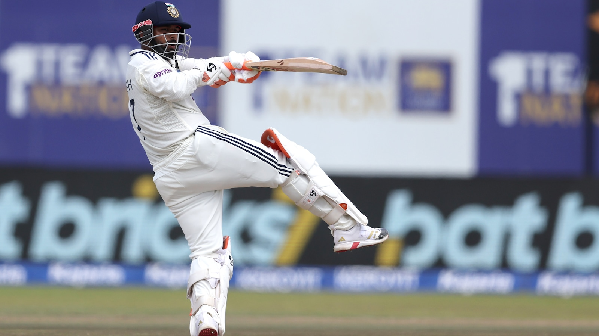

🏏 రిషభ్ పంత్ అరుదైన రికార్డు – టెస్టుల్లో 100 సిక్సర్లు కొట్టిన తొలి భారత బ్యాటర్

టీమిండియా స్టార్ వికెట్ కీపర్ బ్యాటర్ రిషభ్ పంత్ మరోసారి చరిత్ర సృష్టించాడు. శ్రీలంకతో గాలే వేదికగా జరుగుతున్న తొలి టెస్టులో పంత్ అరుదైన ఘనత సాధించాడు. టెస్టు క్రికెట్లో 100 సిక్సర్లు పూర్తి చేసిన తొలి భారత బ్యాటర్గా రికార్డు నెలకొల్పాడు. తన దూకుడైన బ్యాటింగ్తో ప్రత్యేక గుర్తింపు తెచ్చుకున్న పంత్.. ఈసారి టెస్టు క్రికెట్లోనే తన పవర్ హిట్టింగ్ సత్తాను ప్రపంచానికి చూపించాడు.
భారత జట్టుకు టెస్టు క్రికెట్లో ఎంతో కీలకమైన ఆటగాడిగా మారిన పంత్, శ్రీలంకతో జరిగిన మ్యాచ్లో రెండో ఇన్నింగ్స్లో అద్భుతంగా బ్యాటింగ్ చేశాడు. కేవలం 69 బంతుల్లో 66 పరుగులు సాధించి శ్రీలంక బౌలర్లపై విరుచుకుపడ్డాడు. ఈ ఇన్నింగ్స్లో రెండు భారీ సిక్సర్లు బాదిన పంత్.. తన టెస్టు కెరీర్లో 100 సిక్సర్ల మైలురాయిని అందుకున్నాడు.
ఈ రికార్డుతో పంత్ టెస్టుల్లో 100 సిక్సర్లు కొట్టిన ప్రపంచంలోని అరుదైన ఆటగాళ్ల జాబితాలో చేరాడు. ఇంతకుముందు బెన్ స్టోక్స్, బ్రెండన్ మెకల్లమ్, ఆడమ్ గిల్క్రిస్ట్ మాత్రమే ఈ ఘనత సాధించారు. ఇప్పుడు రిషభ్ పంత్ కూడా ఈ ఎలైట్ క్లబ్లో చేరాడు. అంతేకాదు, ఈ మైలురాయిని అందుకున్న తొలి భారత ఆటగాడిగా ప్రత్యేక రికార్డు సృష్టించాడు.
పంత్ సాధించిన ఈ రికార్డులో మరో ప్రత్యేకత కూడా ఉంది. అతను కేవలం 51 టెస్టులు, 89 ఇన్నింగ్స్లలోనే 100 సిక్సర్ల మార్క్ను చేరుకున్నాడు. దీంతో టెస్టుల్లో అత్యంత వేగంగా 100 సిక్సర్లు పూర్తి చేసిన ఆటగాడిగా కూడా పంత్ రికార్డు సృష్టించాడు. ఈ విషయంలో గతంలో ఉన్న ఆడమ్ గిల్క్రిస్ట్, బెన్ స్టోక్స్, బ్రెండన్ మెకల్లమ్ వంటి దిగ్గజాలను పంత్ వెనక్కి నెట్టాడు.
పంత్ ఆటతీరు మొదటి నుంచే దూకుడుగా ఉంటుంది. సాధారణంగా టెస్టు క్రికెట్లో బ్యాటర్లు ఎక్కువ సమయం క్రీజులో ఉండేందుకు ప్రయత్నిస్తారు. అయితే పంత్ మాత్రం అవకాశం దొరికినప్పుడల్లా బౌలర్లపై ఎదురుదాడికి దిగుతాడు. స్పిన్నర్లు, ఫాస్ట్ బౌలర్లు అనే తేడా లేకుండా భారీ షాట్లు ఆడగల సామర్థ్యం అతని సొంతం. అందుకే అతని బ్యాటింగ్ను అభిమానులు ఎంతో ఆసక్తిగా చూస్తుంటారు.

శ్రీలంకతో ఈ మ్యాచ్లో పంత్ తొలి ఇన్నింగ్స్లో 39 పరుగులు చేశాడు. అయితే రెండో ఇన్నింగ్స్లో మాత్రం తన అసలు దూకుడును చూపించాడు. వేగంగా 66 పరుగులు చేసి భారత స్కోరును భారీ స్థాయికి తీసుకెళ్లడంలో కీలక పాత్ర పోషించాడు. అతని ఇన్నింగ్స్లో బౌండరీలతో పాటు భారీ సిక్సర్లు కూడా ఉండటంతో మ్యాచ్కు మరింత ఉత్కంఠ వచ్చింది.
పంత్కు ఈ రికార్డు మరింత ప్రత్యేకం కావడానికి మరో కారణం ఉంది. గతంలో అతను తీవ్ర ప్రమాదానికి గురై చాలా కాలం క్రికెట్కు దూరమయ్యాడు. కెరీర్పై అనేక సందేహాలు వ్యక్తమైన సమయంలో కూడా పంత్ పట్టుదల కోల్పోలేదు. కఠినమైన రిహాబిలిటేషన్ తర్వాత మళ్లీ మైదానంలోకి వచ్చి తన బ్యాటింగ్తో సమాధానం ఇచ్చాడు.
ఇప్పుడు అదే పంత్ టెస్టుల్లో 100 సిక్సర్లు కొట్టి చరిత్రలో తన పేరును నిలబెట్టుకున్నాడు. భారత క్రికెట్లో దూకుడైన టెస్టు బ్యాటింగ్కు పంత్ ఒక ప్రత్యేక గుర్తింపుగా మారాడు. ఇప్పటికే ఎన్నో కీలక ఇన్నింగ్స్లు ఆడిన అతను, ఇప్పుడు ఈ అరుదైన రికార్డుతో తన కెరీర్లో మరో గొప్ప అధ్యాయాన్ని చేర్చుకున్నాడు.
టెస్టు క్రికెట్లో 100 సిక్సర్లు అంటే సాధారణ విషయం కాదు. అందులోనూ భారత బ్యాటర్గా ఈ ఘనత సాధించడం మరింత ప్రత్యేకం. భవిష్యత్తులో పంత్ మరిన్ని సిక్సర్లు కొట్టి ఈ రికార్డును మరింత ముందుకు తీసుకెళ్లే అవకాశం ఉంది. ప్రస్తుతం మాత్రం రిషభ్ పంత్ పేరు టెస్టు క్రికెట్లో 100 సిక్సర్లు కొట్టిన అరుదైన ఆటగాళ్ల జాబితాలో నిలిచిపోయింది. భారత క్రికెట్ అభిమానులకు ఇది నిజంగా గర్వించదగ్గ విషయం.
← హోమ్ పేజీకి వెళ్లండి